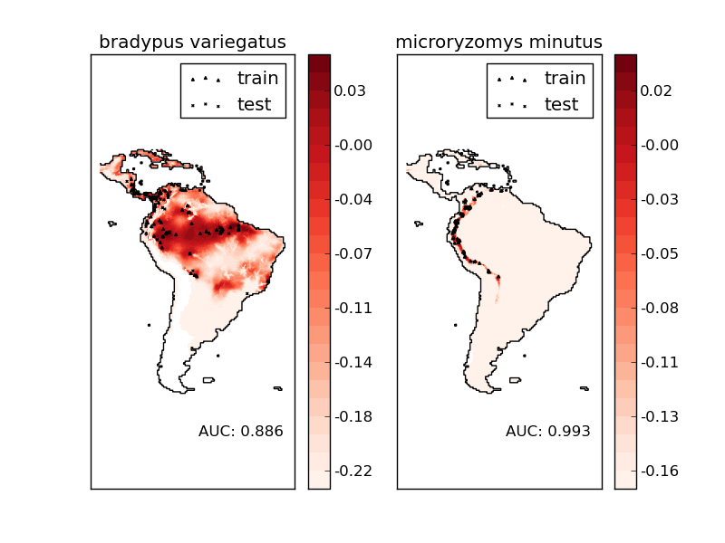

Species distribution modeling¶
Modeling species’ geographic distributions is an important problem in conservation biology. In this example we model the geographic distribution of two south american mammals given past observations and 14 environmental variables. Since we have only positive examples (there are no unsuccessful observations), we cast this problem as a density estimation problem and use the OneClassSVM provided by the package scikits.learn.svm as our modeling tool. The dataset is provided by Phillips et. al. (2006). If available, the example uses basemap to plot the coast lines and national boundaries of South America.
The two species are:
- Bradypus variegatus , the Brown-throated Sloth.
- Microryzomys minutus , also known as the Forest Small Rice Rat, a rodent that lives in Peru, Colombia, Ecuador, Peru, and Venezuela.
References:

- “Maximum entropy modeling of species geographic distributions” S. J. Phillips, R. P. Anderson, R. E. Schapire - Ecological Modelling, 190:231-259, 2006.
Python source code: plot_species_distribution_modeling.py
from __future__ import division
# Author: Peter Prettenhofer <peter.prettenhofer@gmail.com>
#
# License: Simplified BSD
print __doc__
import pylab as pl
import numpy as np
try:
from mpl_toolkits.basemap import Basemap
basemap = True
except ImportError:
basemap = False
from time import time
from os.path import normpath, split, exists
from glob import glob
from scikits.learn import svm
from scikits.learn.metrics import roc_curve, auc
from scikits.learn.datasets.base import Bunch
################################################################################
# Download the data, if not already on disk
samples_url = "http://www.cs.princeton.edu/~schapire/maxent/datasets/" \
"samples.zip"
coverage_url = "http://www.cs.princeton.edu/~schapire/maxent/datasets/" \
"coverages.zip"
samples_archive_name = "samples.zip"
coverage_archive_name = "coverages.zip"
def download(url, archive_name):
if not exists(archive_name[:-4]):
if not exists(archive_name):
import urllib
print "Downloading data, please wait ..."
print url
opener = urllib.urlopen(url)
open(archive_name, 'wb').write(opener.read())
print
import zipfile
print "Decompressiong the archive: " + archive_name
zipfile.ZipFile(archive_name).extractall()
print
download(samples_url, samples_archive_name)
download(coverage_url, coverage_archive_name)
t0 = time()
################################################################################
# Preprocess data
species = ["bradypus_variegatus_0", "microryzomys_minutus_0"]
species_map = dict([(s, i) for i, s in enumerate(species)])
# x,y coordinates of study area
x_left_lower_corner = -94.8
y_left_lower_corner = -56.05
n_cols = 1212
n_rows = 1592
grid_size = 0.05 # ~5.5 km
# x,y coordinates for each cell
xmin = x_left_lower_corner + grid_size
xmax = xmin + (n_cols * grid_size)
ymin = y_left_lower_corner + grid_size
ymax = ymin + (n_rows * grid_size)
# x coordinates of the grid cells
xx = np.arange(xmin, xmax, grid_size)
# y coordinates of the grid cells
yy = np.arange(ymin, ymax, grid_size)
print "Data grid"
print "---------"
print "xmin, xmax:", xmin, xmax
print "ymin, ymax:", ymin, ymax
print "grid size:", grid_size
print
################################################################################
# Load data
print "loading data from disk..."
def read_file(fname):
"""Read coverage grid data; returns array of
shape [n_rows, n_cols]. """
f = open(fname)
# Skip header
for i in range(6):
f.readline()
X = np.fromfile(f, dtype=np.float32, sep=" ", count=-1)
f.close()
return X.reshape((n_rows, n_cols))
def load_dir(directory):
"""Loads each of the coverage grids and returns a
tensor of shape [14, n_rows, n_cols].
"""
data = []
for fpath in glob("%s/*.asc" % normpath(directory)):
fname = split(fpath)[-1]
fname = fname[:fname.index(".")]
X = read_file(fpath) #np.loadtxt(fpath, skiprows=6, dtype=np.float32)
data.append(X)
return np.array(data, dtype=np.float32)
def get_coverages(points, coverages, xx, yy):
"""
Returns
-------
array : shape = [n_points, 14]
"""
rows = []
cols = []
for n in range(points.shape[0]):
i = np.searchsorted(xx, points[n, 0])
j = np.searchsorted(yy, points[n, 1])
rows.append(-j)
cols.append(i)
return coverages[:, rows, cols].T
species2id = lambda s: species_map.get(s, -1)
train = np.loadtxt('samples/alltrain.csv', converters={0: species2id},
skiprows=1, delimiter=",")
test = np.loadtxt('samples/alltest.csv', converters={0: species2id},
skiprows=1, delimiter=",")
# Load env variable grids
coverage = load_dir("coverages")
# Per species data
bv = Bunch(name=" ".join(species[0].split("_")[:2]),
train=train[train[:,0] == 0, 1:],
test=test[test[:,0] == 0, 1:])
mm = Bunch(name=" ".join(species[1].split("_")[:2]),
train=train[train[:,0] == 1, 1:],
test=test[test[:,0] == 1, 1:])
# Get features (=coverages)
bv.train_cover = get_coverages(bv.train, coverage, xx, yy)
bv.test_cover = get_coverages(bv.test, coverage, xx, yy)
mm.train_cover = get_coverages(mm.train, coverage, xx, yy)
mm.test_cover = get_coverages(mm.test, coverage, xx, yy)
def predict(clf, mean, std):
"""Predict the density of the land grid cells
under the model `clf`.
Returns
-------
array : shape [n_rows, n_cols]
"""
Z = np.ones((n_rows, n_cols), dtype=np.float64)
# the land points
idx = np.where(coverage[2] > -9999)
X = coverage[:, idx[0], idx[1]].T
pred = clf.decision_function((X-mean)/std)[:,0]
Z *= pred.min()
Z[idx[0], idx[1]] = pred
return Z
# background points (grid coordinates) for evaluation
np.random.seed(13)
background_points = np.c_[np.random.randint(low=0, high=n_rows, size=10000),
np.random.randint(low=0, high=n_cols, size=10000)].T
# The grid in x,y coordinates
X, Y = np.meshgrid(xx, yy[::-1])
#basemap = False
for i, species in enumerate([bv, mm]):
print "_" * 80
print "Modeling distribution of species '%s'" % species.name
print
# Standardize features
mean = species.train_cover.mean(axis=0)
std = species.train_cover.std(axis=0)
train_cover_std = (species.train_cover - mean) / std
# Fit OneClassSVM
print "fit OneClassSVM ... ",
clf = svm.OneClassSVM(nu=0.1, kernel="rbf", gamma=0.5)
clf.fit(train_cover_std)
print "done. "
# Plot map of South America
pl.subplot(1, 2, i + 1)
if basemap:
print "plot coastlines using basemap"
m = Basemap(projection='cyl', llcrnrlat=ymin,
urcrnrlat=ymax, llcrnrlon=xmin,
urcrnrlon=xmax, resolution='c')
m.drawcoastlines()
m.drawcountries()
#m.drawrivers()
else:
print "plot coastlines from coverage"
CS = pl.contour(X, Y, coverage[2,:,:], levels=[-9999], colors="k",
linestyles="solid")
pl.xticks([])
pl.yticks([])
print "predict species distribution"
Z = predict(clf, mean, std)
levels = np.linspace(Z.min(), Z.max(), 25)
Z[coverage[2,:,:] == -9999] = -9999
CS = pl.contourf(X, Y, Z, levels=levels, cmap=pl.cm.Reds)
pl.colorbar(format='%.2f')
pl.scatter(species.train[:, 0], species.train[:, 1], s=2**2, c='black',
marker='^', label='train')
pl.scatter(species.test[:, 0], species.test[:, 1], s=2**2, c='black',
marker='x', label='test')
pl.legend()
pl.title(species.name)
pl.axis('equal')
# Compute AUC w.r.t. background points
pred_background = Z[background_points[0], background_points[1]]
pred_test = clf.decision_function((species.test_cover-mean)/std)[:,0]
scores = np.r_[pred_test, pred_background]
y = np.r_[np.ones(pred_test.shape), np.zeros(pred_background.shape)]
fpr, tpr, thresholds = roc_curve(y, scores)
roc_auc = auc(fpr, tpr)
pl.text(-35, -70, "AUC: %.3f" % roc_auc, ha="right")
print "Area under the ROC curve : %f" % roc_auc
print "time elapsed: %.3fs" % (time() - t0)
pl.show()